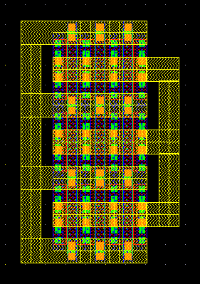
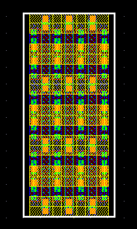
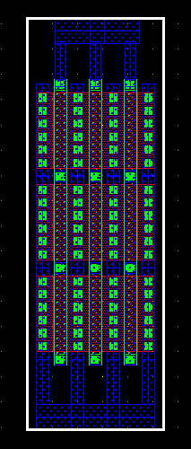

Mos varactor 'Style' property
These layouts show the effect of varying the 'Style' property for a default size mos varactor with nf=3 and ns=3
style = 2MET_connected (default)

style = 2MET

style = 1MET
